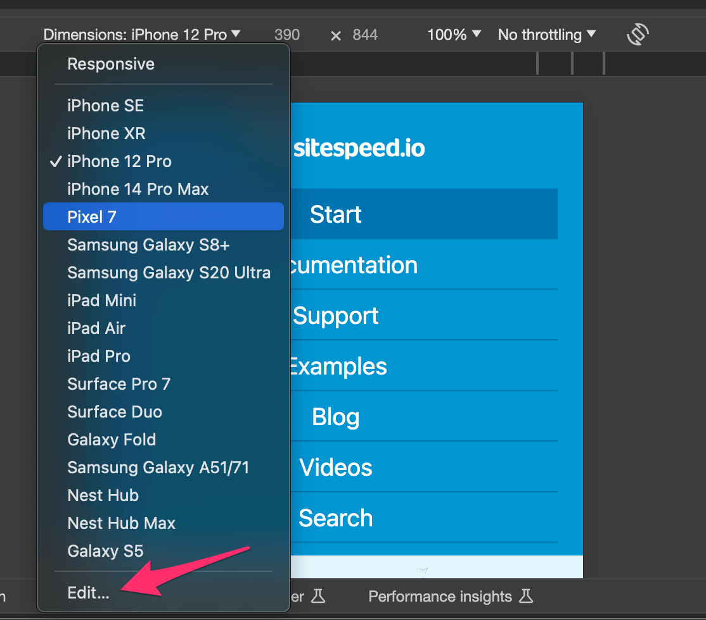
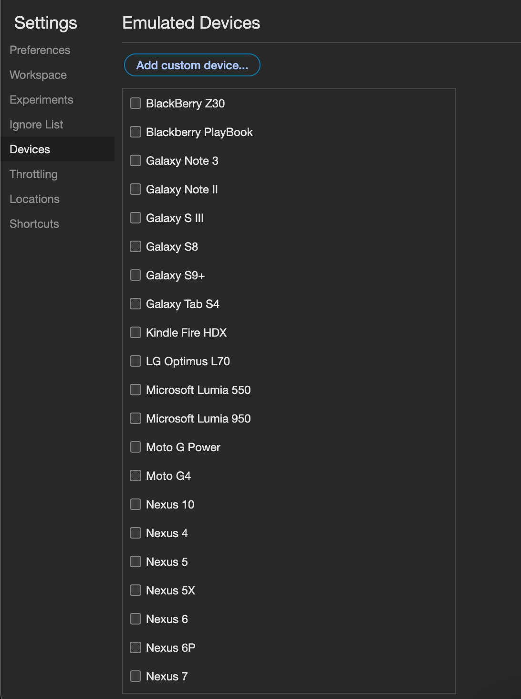

Documentation / Mobile phones
Run tests on mobile phones #
- Test on Android
- Test on iOS
- Test on iOS simulator
- Test on emulated mobile
Test on Android #
You can run your tests on Chrome on Android phones.
Prerequisites #
We normally recommends using our Docker containers when you run sitespeed.io/Browsertime. However driving Android from Docker only works on a Linux host since there’s is no way at the moment to map USB on Mac. If you use a Mac Mini or another Mac computer you should use the npm version. try
Desktop #
If you don’t use Docker you need to:
- Install the Android SDK on your desktop (just the command line tools!). If you are on a Mac and use Homebrew just run:
brew install --cask android-platform-tools. On Linux run:apt-get install android-tools-adb
On your phone #
You probably want to setup a new phone from scratch to have a dedicated device. When you start your phone for the first time, follow these instructions:
- Make sure to say no to all data collection (on a new Android its something like 4-5 times you need to say no)
- Setup a specific Google account that you use for testing
- Update to latest Chrome in the Play Store (log in with your new user)
- Set volume to zero for Media/Alarm/Ring, and turn off the Power up/down sound. Turn off all sounds that you can!
- Disable screen lock on your device (Set Screen Lock to None).
- You probably also want to disable notifications from different update services. Do that under Settings and Apps, then choose the service and select Notifications and toggle Block All to On.
Next step is to prepare your phone to be used from a computer. To do that you need to enable Developer options:
- Go to About device (or About phone) in your settings, tap it, scroll down to the Build number, tap it seven (7) times to enable developer options.
Then in Developer options:
- Enable Stay awake
- Turn off Automatic System Updates
- Enable USB debugging
You are almost ready!
- Plug in your phone using the USB port on your desktop computer.
- When you plugin your phone, click OK on the “Allow USB debugging?” popup.
Run #
You are now ready to test using your phone:
sitespeed.io --android https://www.sitespeed.io
Remember: To test on Android using Docker you need to be on Linux (tested on Ubuntu). It will not work on OS X.
docker run --privileged -v /dev/bus/usb:/dev/bus/usb -e START_ADB_SERVER=true --rm -v "$(pwd):/sitespeed.io" sitespeedio/sitespeed.io:38.6.0 -n 1 --android --browsertime.xvfb false https://www.sitespeed.io
You will get result as you would with running this normally with summaries and waterfall graphs.
If your container cannot see the device, make sure that you do not have the adb server running on the host (stop it with adb kill-server). Your phone can only be atatched to one adb server at a time.
Connectivity #
If you run by default, the phone will use the current connection.
gnirehtet and Throttle #
You can use the connection of your desktop by reverse tethering. And then set the connectivity on your desktop computer.
It’s easiest on you are on a Mac, install gnirehtet using Homebrew: brew install gnirehtet and then run your tests like this:
sitespeed.io --android --video --visualMetrics --gnirehtet --connectivity.engine throttle -c 4g https://www.sitespeed.io
That will automatically start and stop gnirehtet. If you run with multiple devices on the same host, it seems to be better to manually start gnirehtet and the throttling:
- Start gnirehtet for all devices:
gnirehtet autorun - Start throttle:
throttle 4g - Start each test per device.
Note: the first time you run gnirehtet you need to accept the vpn connection on your phone.
Humble #
You can use a throttled WiFi by using Humble.
Video and SpeedIndex #
You can also collect a video and get Visual Metrics. Running on Mac or without Docker you need to install the requirements for VisualMetrics yourself on your machine before you start. If you have everything setup you can run:
sitespeed.io --android --video --visualMetrics https://www.sitespeed.io
And using Docker (remember: only works in Linux hosts):
docker run --privileged -v /dev/bus/usb:/dev/bus/usb -e START_ADB_SERVER=true --rm -v "$(pwd):/sitespeed.io" sitespeedio/sitespeed.io:38.6.0 -n 1 --android --browsertime.xvfb false https://www.sitespeed.io
If you want to run Docker on Mac OS X, you can follow Appiums setup by creating a docker-machine, give out USB access and then run the container from that Docker machine.
Driving multiple phones from the same computer #
If you wanna drive multiple phones from one computer using Docker, you need to mount each USB port to the right Docker container.
You can do that with the --device Docker command: --device=/dev/bus/usb/001/007
The first part is the bus and that will not change, but the second part devnum changes if you unplug the device or restart,
You need to know which phone are connected to which USB port.
Here’s an example on how you can get that automatically before you start the container, feeding the unique id (that you get from lsusb).
#!/bin/bash
# Example ID, change this in your example
ID=22b8:2e76
LSUSB_OUTPUT=$(lsusb -d $ID)
if [ -z “$LSUSB_OUTPUT” ]; then
echo “Could not find the phone”
exit;
fi
BUS=`echo $LSUSB_OUTPUT | grep -Po 'Bus \K[0-9]+'`
# Read the device number:
DEV=`echo $LSUSB_OUTPUT | grep -Po 'Device \K[0-9]+'`
echo $BUS/$DEV
Running different versions of Chrome #
You can choose which Chrome version you want to run on your phone using --chrome.android.package to specify each versions package name. By default (just using --android Chrome stable version is used):
- Chrome Stable - com.android.chrome
- Chrome Beta - com.chrome.beta
- Chrome Dev - com.chrome.dev
- Chrome Canary - com.chrome.canary
- Chromium - org.chromium.chrome
If you installed Chrome Canary on your phone and want to use it, then add --chrome.android.package com.chrome.canary to your run. Driving different versions needs different versions of the ChromeDriver. The Chrome version number needs to match the ChromeDriver version number. Browsertime/sitespeed.io ships with the latest stable version of the ChromeDriver. If you want to run other versions, you need to download from the official ChromeDriver page. And then you specify the version by using --chrome.chromedriverPath.
Collect trace log #
One important thing when testing on mobile is to analyse the Chrome trace log. You can get that with --cpu:
sitespeed.io --android --cpu https://www.sitespeed.io
Running Firefox #
To run Firefox stable you just run:
sitespeed.io --android -b firefox https://www.sitespeed.io
Note that collecting the HAR is turned off since we cannot use the HAR Export trigger on Android.
Only run tests when battery temperature is below X #
You can configure your tests to run when the battery temperature of your phone is below a certain threshold. Over heated mobile phones throttles the CPU so its good to keep track of the temperature (if you send metrics to Graphite/InfluxDB the battery temperature is automatically sent).
Use --androidBatteryTemperatureLimit to set a minimum battery temperature limit before you start your test on your Android phone. Temperature is in Celsius.
In this example the tests will start when the battery is below 32 degrees. By default sitespeed.io will wait two minutes and then check again. You can configure the wait time with --androidBatteryTemperatureWaitTimeInSeconds.
sitespeed.io --android --androidBatteryTemperatureLimit 32 https://www.sitespeed.io
Run on a rooted device #
You can run on fresh Android device or on a rooted device. If you use rooted device and you use a Moto G5 or a Pixel 2 it will be configured for as stable performance as possible if you add --androidRooted to your run. We follow Mozillas setup best practise to do that. Make sure you only do that for a phone that you have dedicated to performance tests, since it will be kept in that performance state after the tests.
Power usage testing #
You can run power usage tests on your webpage with android. To do so, you would need to provide the --androidPower true option:
sitespeed.io --android -b firefox --androidPower true https://www.sitespeed.io
To get data from this, you need to make sure your phone has its charging disabled. One method of doing this could be to run adb over wifi instead of through a USB connection. Alternatively, if your phone is rooted, you can use commands that are similar to these (they are model-specific):
Pixel 2
-------
Disable: adb shell "su -c 'echo 1 > /sys/class/power_supply/battery/input_suspend'"
Enable: adb shell "su -c 'echo 0 > /sys/class/power_supply/battery/input_suspend'"
Moto G5
-------
Disable: adb shell "su -c 'echo 0 > /sys/class/power_supply/battery/charging_enabled'"
Enable: adb shell "su -c 'echo 1 > /sys/class/power_supply/battery/charging_enabled'"
Results from this are gathered into the android.power entry in the browsertime results JSON. The measurements are all in mAh (milliampere-hours). The metrics that are obtained depend on the major android version being used (Android 7 doesn’t have smearing which gives the screen and proportional metrics), but you will usually find these:
- total: The total power used by the application.
- cpu: The total cpu power used by the application.
- sensor: The total sensor power used by the application.
- screen: The total screen power (smeared) used by the application.
- full-screen: The total screen power used during the test (not specific to the application).
- wifi: The total wifi power used by the application.
- full-wifi: The total wifi power used during the test (not specific to the application).
- proportional: The proportionally smeared power usage portion of the application (power usage of background applications that are propotionally attributed to all open applications).
Debug logs on the phone #
If something seems broken and you don’t get any good logs from sitespeed.io you can check the log on the phone.
adb logcat
The log is very verbose, so you probably need to grep to only see specific log messages. For Chrome you can do like this to only get log messages from Chrome:
adb logcat | grep chromium
Test on iOS #
You can run your tests on Safari on iOS.
Prerequisites #
To be able to test you need latest OS X on your Mac computer and iOS on your phone (or iPad).
Desktop #
Run your test using npm (instead of Docker).
SafariDriver the driver that drives Safari is bundled in OS X. But to be able to use it you need to enable it with:
safaridriver --enable
On your phone #
On Safari you need to enable Remote Automation to be able to drive it with WebDriver. To do this, toggle the setting in Settings → Safari → Advanced → Remote Automation.
Plug in the phone into your machine and trust the host and make sure that your phone is unlocked when you run your tests.
Your phone needs to be unlocked (turn off Auto-Lock) and make sure to turn down the brightness, so that you save energy.
If you have any problems, make sure to read the WebKit blog post about setting up your phone for Selenium.
Run #
You are now ready to test using your phone (you need to remove the Coach, Safari on iOS has some kind of issue with running large JavaScript blobs, see #1275):
sitespeed.io -b safari --safari.ios --plugins.remove coach https://www.sitespeed.io
Limitations #
At the moment there are a couple of limitations running Safari:
- No HAR file
- No videos (see the work in #1598).
- No way to set request headers
- No built in setting connectivity
You can help us adding support in Browsertime!
Test on iOS simulator #
You can use the iOS simulator to test run tests on different iOS devices. This works good if you use one of the new M1 Macs since it will then have the same CPU as an iPhone.
To get it running you should have a Mac Mini M1 and Xcode installed. Checkout the install instructions for Mac.
To run your test you need to sepcify the Safari deviceUDID = choosing what kind of device to use. You can list all your availible devices using xcrun simctl list devices.
Then run your test:
sitespeed.io https://www.sitespeed.io -b safari --safari.useSimulator --safari.deviceUDID YOUR_DEVICE_ID --video --visualMetrics -c 4g
Test on emulated mobile #
You can use the desktop browser and emulate mobile browsers. If you use Chrome you can do that easiest with:
sitespeed.io https://www.sitespeed.io -b chrome --browsertime.chrome.mobileEmulation.deviceName "Moto G4"
You can see the list of different device names in Chrome devtools. Click on Edit.

And then you can see the full list.

You can also slow down your CPU with the CPU throttling command to better emulate a mobile phone:
sitespeed.io https://www.sitespeed.io -b chrome --browsertime.chrome.mobileEmulation.deviceName "Moto G4" --browsertime.chrome.CPUThrottlingRate 6
To find a good throttling rate you can use our CPU benchmark guide.
You probably also want to set the user agent string matching the device you want to emulate using --browsertime.userAgent.
However running like this you will use your desktop version of the browser, running on desktop hardware, so it is not the same as running on a real mobile device!